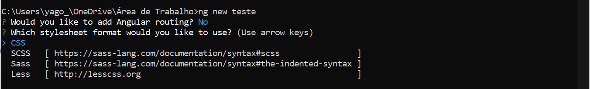

Estrutura de um Component
Os componentes são classes escritas em TypeScript que recebem o decorator @Component, assim como
mostra o primeiro código.
Vamos analisar esse código, atente-se ao fato dele ser uma classe com um decorator, por enquanto.
Um Component é um tipo de classe existente em uma aplicação Angular, eles são identificados com o decorator, por
enquanto..
@Component({{'{'}}
selector: 'app-sobre-component',
templateUrl: './sobre-component.component.html',
styleUrls: ['./sobre-component.component.css']
{{'}'}})
export class SobreComponentComponent implements OnInit {{'{'}}
constructor() {{'{'}} {{'}'}}
ngOnInit(): void {{'{'}}
{{'}'}}
{{'}'}}
Um Component é um tipo de classe existente em uma aplicação Angular, eles são identificados com o decorator
@Component.
Neste decorator existem algumas propriedades mais utilizadas como: selector, templateUrl e style. Vamos especificá-las:
-
Selector: é como identificamos o nosso componente. Para todo o componente existe um elemento único associado
que permite que ele seja adicionado em um documento HTML. Nesse caso, o nome do elemento desse componente é teste e deve ser escrito como
<teste></teste> - TemplateUrl: é o nome do documento HTML que será a parte visual do componente. Nele podemos ter código em HTML juntamente com todos os bindings e diretivas necessários para a exibição do componente no navegador.
- Template: também usado para descrever a parte visual do componente, porém nesse caso podemos fornecer código HTML "hard coded", como texto.
- styleUrl: é onde informamos quais folhas de estilo contêm o código CSS que será aplicado ao template do componente.
Com isso podemos concluir que a estrutura de um componente Angular deve ser formada por esses três
elementos, template (HTML), estilo (CSS) e classe (TypeScript). Essas partes são organizadas em arquivos separados e unidas nos
metadados do componente através do decorator @Component
Que tal criarmos um componente?!
Em um projeto Angular usaremos uma ferramenta chamada Angular CLI para criar componentes. Com ela nos preocupamos menos com a estrutura do componente, pois ela adiciona o mesmo ao projeto já com um código inicial automaticamente. Vamos ver como usar essa ferramenta na prática nesta seção.
Considerando que o Angular já se encontra instalado no seu sistema operacional, iremos em um terminal, no caso do Windows o cmd e no caso de Linux e MacOS o terminal, para criar uma pasta para um projeto de exemplo com o nome "teste". Para isso usamos o comando seguinte comando para criação do projeto.
ng new teste
Dependendo da versão do seu angular Cli, ele fará algumas perguntas:
Basta responder "N",em seguida "Enter".
Em seguida vamos entrar em nossa pasta com o comando:
cd teste
Dentro da nossa pasta vamos iniciar nosso servidor que rodará por padrão na porta 4200. Com o comando:
ng serve
Com o nosso projeto criado vamos adicionar nele um novo componente. A maioria das aplicações Angular será composta de muitos componentes. Para criar um novo componente deveremos executar no terminal o comando visto no a seguir dentro da pasta do projeto.
ng g component inicial
O comando acima gerará um novo componente dentro da pasta "app" chamado inicial, dentro de uma pasta chamada "inicial". Esse componente será composto pelos arquivos "inicial.component.html", "inicial.component.css" e "inicial.component.ts", que contém a estrutura do Component.
import {{'{'}} BrowserModule {{'}'}} from '@angular/platform-browser';import {{'{'}} NgModule {{'}'}} from '@angular/core';
import {{'{'}} AppComponent {{'}'}} from './app.component';
import {{'{'}} InicialComponent {{'}'}} from './inicial.component';
@NgModule({{'{'}}
declarations: [
AppComponent,
InicialComponent
],
imports: [
BrowserModule
],
providers: [],
bootstrap: [AppComponent]
{{'}'}})
export class AppModule {{'{'}} {{'}'}}
Como vimos, as referências aos componentes ficam dentro do decorator @NgModule na propriedade
declarations. É nela que, a princípio, ficarão todos os componentes da nossa aplicação.
Utilizando um componente
Agora, utilizaremos o componente "inicial" para entender como ele pode funcionar em uma aplicação. Serão exibidos alguns textos no browser, porém o conteúdo do texto estará no arquivo inicial.component.ts e usaremos o recurso do binding do Angular para exibir na view.
No arquivo inicial.component.ts colocaremos as variáveis que receberão o título e o conteúdo do texto.
Aora criaremos duas variáveis do tipo string: uma chamada titulo e a outra chamada texto. Ambas terão o modificador de acesso public, já que usaremos em uma view (todo ou parte de uma página web) da aplicação.
import{{'{'}} Component, OnInit {{'}'}} from '@angular/core';
@NgModule({{'{'}}
selector: 'app-pagina',
templateUrl: './inicial.component.html',
styleUrls: [ './inicial.component.css']
{{'}'}});
export class PaginaComponent implements OnInit {{'{'}}
public titulo: string;
public texto: string;
constructor() {{'{'}} {{'}'}}
ngOnInit() {{'{'}} {{'}'}}
Para conseguirmos visualizar o conteúdo da nossa view, visto que não configuramos uma rota no nosso projeto, teremos
que fazer uma alteração no arquivo "app.component.html" na raiz da nossa pasta "app". Excluiremos o conteúdo já
existente e colocaremos o seletor do nosso componente <app-inicial> para quando carregarmos a aplicação a nossa view possa aparecer, como mostra à seguir:
Caso a aplicação esteja em execução, logo a nova página será exibida, do contrário, deverá executar o comando ng serve em um terminal dentro da pasta do nosso projeto.
Poderemos dar uma melhorada no visual da aplicação editando o arquivo inicial.compoment.css, onde colocaremos algum código CSS.
Conclusão
Os componentes são uma parte importante de toda aplicação Angular, pois é neles que criamos a lógica por trás do funcionamento das views. Vimos como eles são estruturados e como implementá-los em um projeto já criado. Também vimos como podemos configurar as variáveis criadas dentro de um componente e fazer com que os seus valores sejam visualizados em um template.